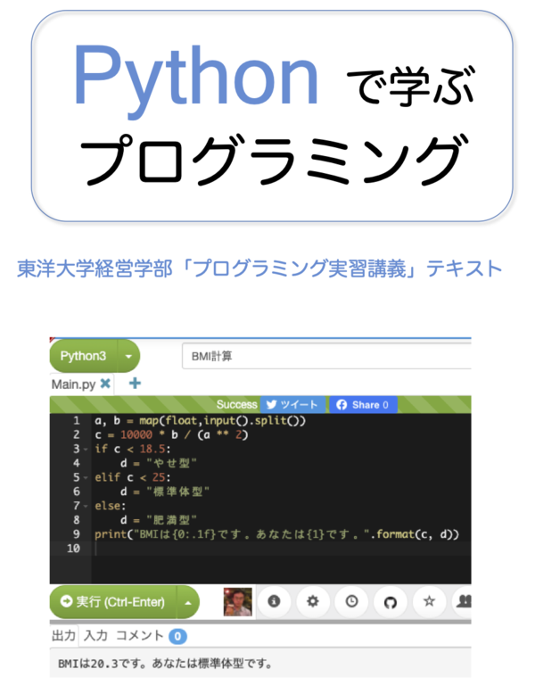

|
「Pythonで学ぶプログラミング」は、関が担当する東洋大学経営学部2年次配当科目「プログラミング実習講義」の授業テキストです。プログラミング未経験者がプログラミングの初歩を理解できるように、Pythonのプログラムを動かしながら学びます。 ダウンロード
|  |
このテキストは、東洋大学経営学部専門科目「プログラミング実習講義」の教材です。この授業は、プログラミング未経験の学生がプログラミングの経験を通してプログラミングに必要な論理的思考力を身につけ、アルゴリズムとデータ構造の理解を深めることを目的としています。
私が東洋大学に着任したのは2008年度で、それまで東洋大学経営学部の野中誠先生が担当されていた「数理・情報実習講義B」という科目を引き継ぎました。内容はJavaプログラミングであり、野中先生作成のテキストを引き継いで授業をしました。その後、2014年度からは「情報処理実習D」2019年度からは「プログラミング実習講義」と科目名が変わり、当初のテキストに改訂を重ねながら授業を続けてきました。2018年度までは履修者数が10名程度でしたが、2019年度には履修希望者が299名に急増しました。科目名に「プログラミング」が入っただけでこれほど履修者が増えるほどにプログラミングの関心が高まっているのかと驚きました。
そして2020年度からは、Pythonを教える授業に変えることとしました。その理由は、統計やAIに使われる言語としてPythonの人気が高まり、学生からも「授業でPythonを教えてほしい」という声が寄せられるようになったこと、私自身も、2015年にPythonの勉強を始め、日常的にPythonを使うようになり、Pythonを気に入っていることなどです。テキスト中のプログラムをJavaからPythonに書き直したことで、全体的にコードもすっきりと短くなり、初学者に理解しやすくなったのではないかと思います。また、学生が自宅のPCでも学習しやすいように、オンラインのプログラム実行環境 Paiza を使うこととしました。
履修者の多くはプログラミングの初学者ですが、プログラミングの経験がある学生もいます。そのような学生にとっては初学者向けの内容ばかりだと物足りないので、ところどころ「発展」としてさらに深く学びたい学生が学習をするためのきっかけを与えています。
テキストの多くの部分は私が書いたものですが、野中先生作成の図面や解説も含まれています。野中先生の許可を得て2020年度版のテキストからインターネットに公開します。